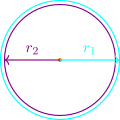
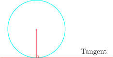
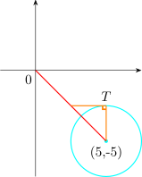

22.2 The Equation and Proportional of Tangents to a Circle
- 1.
- If two tangents can be drawn from any external point \(T\) to the circle and these tangents
are equal in length.

- 2.
- The radius drawn to the point of contact of a tangent with the circle is at right angle to the
tangent.

- 3.
- The tangent at \((\alpha , \beta )\) has an equation \(\alpha x + \beta y = a^2\)
The variable point \(P(x,y)\) moves in such a way that \(\hspace {0.2cm} AP^2 = 4BP^2\hspace {0.2cm}\) where \(A\) is the point \((1,3)\) and \(B\) is the point \((4,-3)\).
- a.
- Show that \(P\) lies on the circle with equation \(\hspace {0.2cm} x^2 + y^2 - 10x + 10y + 30 = 0\)
- b.
- Find a equation of the tangent at \((1,-3)\) to the circles.
- c.
- The line \(O\) is a tangent to the circle where \(O\) is the critical point to the circle and \(T\) lies on the
circle. Calculate the length of \(OT\).
Solution.
- a.
- \(\hspace {0.3cm} AP^2 = (x - 1)^2 + (y - 3)^2\)
\(\hspace {0.3cm} BP^2 = (x- 4)^2 + (y + 3)^2\)
\(\hspace {0.3cm} AP^2 = 4BP^2\)
\begin {align*} \implies \hspace {0.2cm} (x - 1)^2 + (y - 3)^2 & = 4\big [ (x - 4)^2 + (y + 3)^2\big ]\\ \implies \hspace {0.2cm} x^2 - 2x + 1 + y^2 - 6y + 9 & = 4x^2 - 32x + 64 + 4y^2 + 24y + 36\\ \implies \hspace {0.2cm} 3x^2 + 3y^2 - 30x + 30y + 90 & = 0\\\\ \therefore \hspace {0.2cm} x^2 + y^2 - 10x + 10y + 30 & = 0\\ \end {align*}
- b.
- \(\hspace {0.3cm}\displaystyle {2x + 2y\hspace {0.1cm}\dfrac {dy}{dx} - 10 + 10\hspace {0.1cm}\dfrac {dy}{dx} = 0\hspace {0.2cm},\hspace {0.2cm}}\) At \(\hspace {0.2cm}(1,-3)\)
\begin {align*} m & = \dfrac {dy}{dx}\Bigg |_{x = 1, y = -3}\\\\ & = \dfrac {10 - 2(1)}{2(-3) + 10} = \dfrac {8}{4}\\ \implies \hspace {0.2cm} m & = 2 \end {align*}
\begin {align*} y - y_1 & = \dfrac {dy}{dx}(x - x_1)\\\\ \implies \hspace {0.2cm} y + 3 & = 2(x- 1)\\ \implies \hspace {0.2cm} y & = 2x - 5 \end {align*}
- c.
- \(\hspace {0.3cm} x^2 + y^2 - 10x + 10y + 30 = 0\)
Center at \((5,-5),\hspace {0.3cm} r = \sqrt {20} = 2\sqrt {5}\)

\[OT^2 = OC^2 - CT^2 \hspace {0.2cm}\implies \hspace {0.2cm} OT^2 = 5^2 + 5^2 - 20 = 30\]
Questions on this section
Stuck on something here? Ask below and it stays attached to this topic.